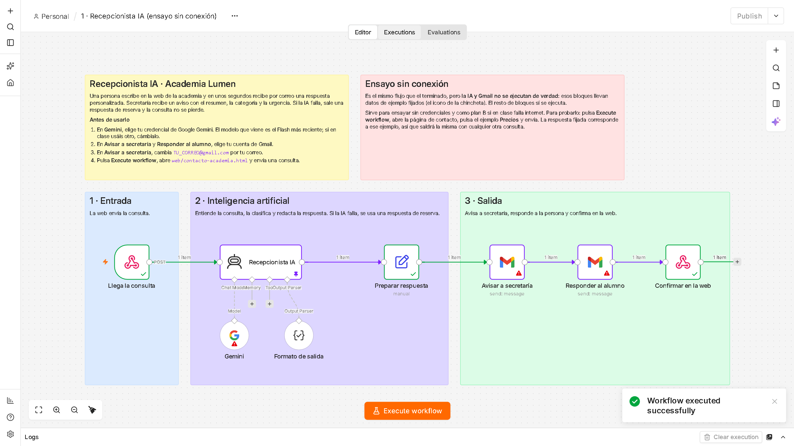
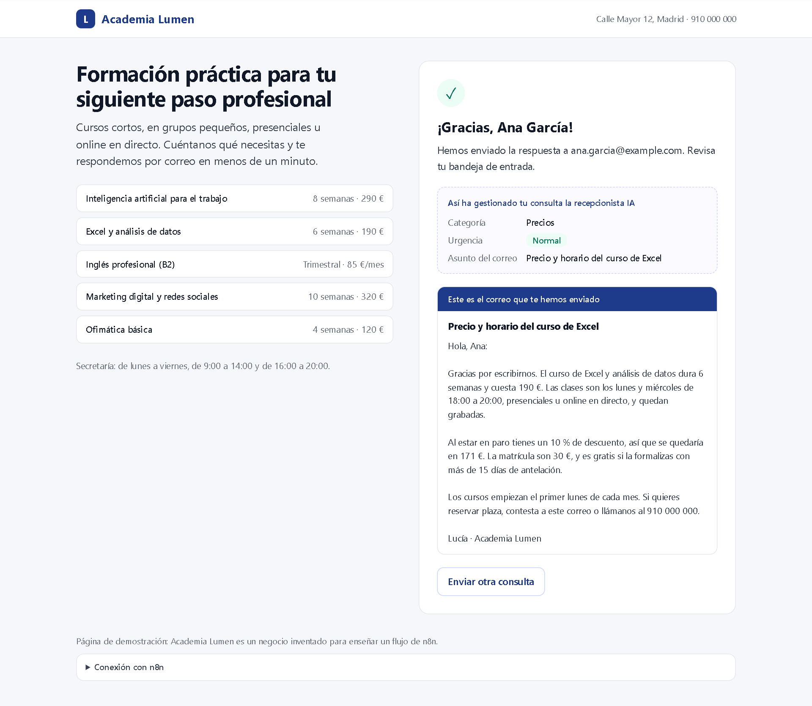
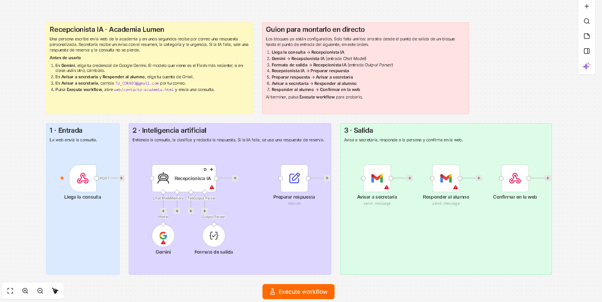
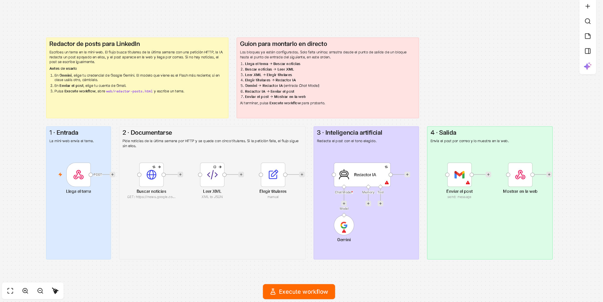
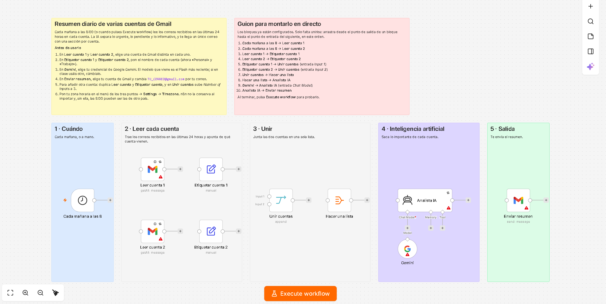
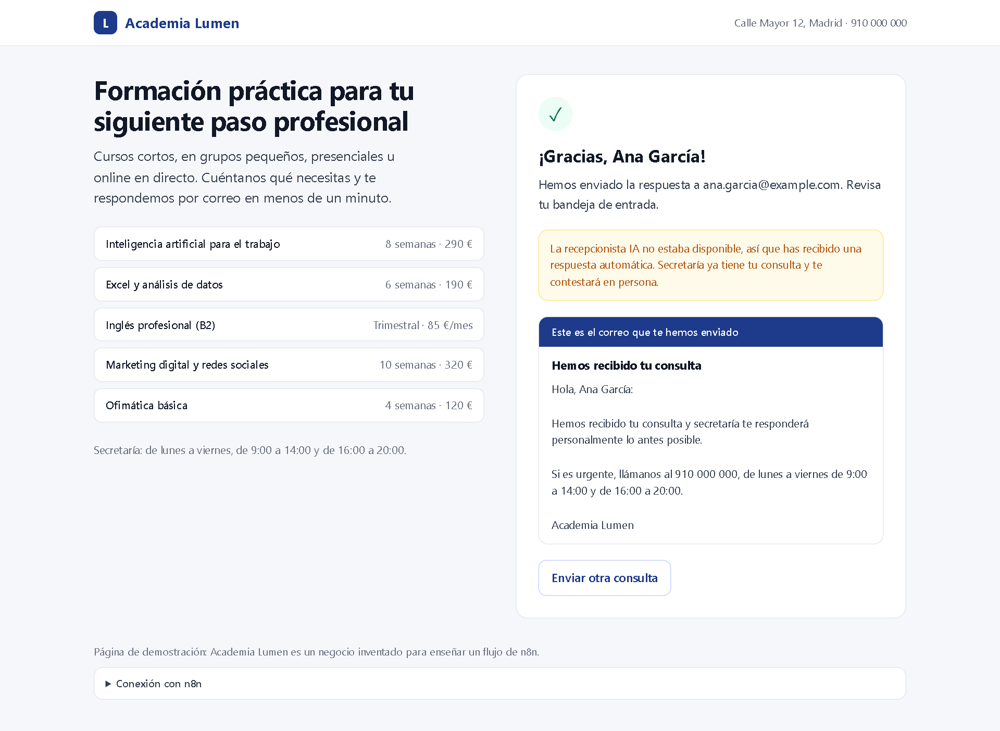

Tres flujos de n8n con IA, listos para enseñar en directo
Cada flujo viene en dos versiones: una terminada, que ya funciona, y otra para montar, con los mismos bloques ya configurados pero sin unir, para que los conectes arrastrando delante de la clase.
1 · Qué hay en la carpeta
Todo lo que necesitas está aquí; no hay que instalar nada más que tu n8n.
Recepcionista IA. Una persona escribe en la web de la academia y, en unos segundos, recibe por correo una respuesta hecha a su medida. Secretaría recibe un aviso con la urgencia y el resumen. Si la IA falla, la persona recibe una respuesta de reserva y la consulta no se pierde.
Redactor de posts. Escribes un tema en una mini-web. El flujo busca titulares de la última semana con una petición HTTP, la IA redacta un post para LinkedIn apoyado en ellos, y el post aparece en la web y llega por correo.
Resumen de varios Gmail. Lee los correos recibidos en las últimas 24 horas en dos cuentas de Gmail. La IA separa lo urgente, lo pendiente y lo informativo de cada una, y te llega un único correo con el resumen.
flujos/ensayo-sin-conexion/
Copias de ensayo. Los mismos tres flujos con la IA y Gmail simulados, para ensayar sin credenciales y como plan B si en clase falla internet. Se explican en el apartado 3.
web/contacto-academia.html
La página de contacto de la academia inventada. Envía la consulta al flujo 1 y enseña la respuesta de la IA.
web/redactor-posts.html
La mini-web donde se escribe el tema. Envía el tema al flujo 2 y muestra el post.
guia.html e img/
Esta guía y sus capturas.
Entre los tres flujos se usa todo lo que habéis visto en clase: agentes de IA en los tres, Gmail en los tres (leer y enviar), webhooks en el 1 y el 2, y peticiones HTTP en el 2.
2 · Preparación
Se hace una sola vez, con calma, antes de la clase. Unos 15 minutos.
1Importa los seis flujos
En n8n, crea un flujo nuevo (Add workflow).
Abre el menú de los tres puntos de arriba a la derecha y elige Import → From file. En versiones anteriores de n8n la opción se llama Import from File.
Elige un archivo de la carpeta flujos. Las versiones recientes de n8n lo guardan solas; en las anteriores, guarda con Ctrl + S.
Repite con los otros cinco. Cada uno se guarda como un flujo distinto en tu n8n.
2Elige las credenciales
Los archivos no llevan contraseñas ni claves. Al importar, los bloques de Gemini y de Gmail aparecen con un aviso hasta que eliges tu credencial: abre el bloque y selecciónala en el desplegable de credencial, arriba del todo.
Si n8n las elige solo. Las versiones recientes, al importar, ponen ellas mismas una credencial que ya tengas y avisan con el mensaje «Credentials auto-added». Revísalo bloque a bloque: en el flujo 3 puede poner la misma cuenta de Gmail en Leer cuenta 1 y en Leer cuenta 2, y la segunda hay que cambiarla a mano.
Bloque
Qué elegir
Gemini (los tres flujos)
Tu credencial de Google Gemini, la misma de clase. En Model viene gemini-flash-latest, un nombre que apunta siempre al modelo Flash más reciente de Google, así que no caduca. Si en clase usáis otro, elígelo en la lista.
Responder al alumno, Avisar a secretaría, Enviar el post, Enviar resumen
Tu cuenta de Gmail.
Leer cuenta 1 y Leer cuenta 2 (flujo 3)
Una cuenta de Gmail distinta en cada uno.
Segunda cuenta de Gmail. En el bloque Leer cuenta 2, elige Create new credential, pega el mismo Client ID y Client Secret que usaste para la primera e inicia sesión con la otra cuenta. Si Google responde que el acceso está bloqueado, entra en Google Cloud, abre Google Auth Platform → Audience (Público) y añade esa dirección en Test users (Usuarios de prueba).
3Pon tu correo y los nombres de tus cuentas
Flujo 1, bloque Avisar a secretaría: cambia TU_CORREO@gmail.com por tu correo en el campo To.
Flujo 3, bloque Enviar resumen: lo mismo.
Flujo 3, bloques Etiquetar cuenta 1 y Etiquetar cuenta 2: cambia «Personal» y «Trabajo» por el nombre que quieras dar a cada cuenta.
Flujo 3, hora del resumen: n8n no conserva la zona horaria al importar un flujo, así que las 8:00 serían las de la zona que tenga tu n8n por defecto (si nunca la has cambiado, la de Nueva York). Abre el menú de los tres puntos → Settings, elige la tuya en Timezone (en la península, Europe/Madrid) y pulsa Save.
Hazlo en las dos versiones. La versión terminada y la versión para montar son flujos distintos, así que las credenciales y tu correo hay que ponerlos en ambas. Cada flujo lleva una nota amarilla con estos mismos pasos.
3 · Probar que todo funciona
Con las versiones terminadas, antes de la clase.
Qué está comprobado. En n8n 2.42.6 se ha probado importar los archivos desde el menú, montar las tres versiones «para montar» arrastrando las uniones en el orden del guion y ejecutar los tres flujos con el agente de IA funcionando contra una IA simulada. También lo que pasa cuando algo va mal: la IA contesta mal una vez (se reintenta sola), la IA no responde de ninguna manera (sale la respuesta de reserva) y Google Noticias no contesta (el post se escribe sin titulares). Y las dos páginas web, la petición de noticias y los casos raros: texto con etiquetas, campos vacíos, mensajes larguísimos y cuentas sin correo. Lo que no se ha podido probar es Gemini y Gmail de verdad, porque dependen de tus credenciales: haz una prueba real de cada flujo antes de la clase.
1Recepcionista IA
Abre el flujo y pulsa Execute workflow. El primer bloque se queda esperando.
Abre web/contacto-academia.html con doble clic. Pulsa uno de los ejemplos, escribe tu correo y envía.
En n8n los bloques se van poniendo en verde. En la web aparece el mensaje de gracias con la categoría y la urgencia que ha decidido la IA, y debajo el correo de respuesta tal como se ha enviado.
Mira tu bandeja: tienes el aviso para secretaría y la respuesta al alumno.
Si en la web, en lugar de la clasificación, aparece un aviso de «respuesta automática», la IA no ha respondido y ha entrado la respuesta de reserva. Lo más habitual al principio es que falte elegir la credencial en el bloque Gemini.
2Redactor de posts
Abre el flujo y pulsa Execute workflow.
Abre web/redactor-posts.html, elige un tema, un tono y tu correo, y pulsa «Redactar post».
En unos segundos el post aparece a la derecha, con los titulares en los que se ha apoyado, y te llega también por correo.
3Resumen de varios Gmail
Abre el flujo y pulsa Execute workflow. No hace falta esperar a las 8:00: el botón lo lanza en el momento.
Las dos cuentas se leen a la vez, se unen y pasan por la IA.
Mira tu bandeja: tienes un correo «Resumen de tus correos» con una sección por cuenta.
Ensayar sin credenciales (y plan B sin internet)
En flujos/ensayo-sin-conexion hay una copia de cada flujo que funciona sin Gemini ni Gmail. Los bloques de IA y de Gmail llevan datos fijados (se reconocen por el icono de la chincheta y el borde morado): n8n no los ejecuta y usa en su lugar el resultado de ejemplo que llevan guardado. El resto del flujo se ejecuta de verdad.

La copia de ensayo, ejecutada. En verde, lo que se ha ejecutado; en morado, los bloques con datos fijados.
Para ensayar: impórtalas igual que las demás, pulsa Execute workflow y usa las páginas web. No hace falta elegir credenciales.
Como plan B: si en clase se cae internet o Gemini no responde, abre la copia de ensayo y sigue con ella. Di que es un ensayo: la respuesta de la IA es siempre el mismo ejemplo, escribas lo que escribas.
Para explicarlo: fijar datos es un recurso de n8n para probar un flujo sin gastar llamadas a la IA. Se quita abriendo el bloque y pulsando la chincheta.

Lo que enseña la página de contacto cuando el flujo responde: la categoría, la urgencia y el correo que ha escrito la IA.
Prueba o publicado
Las dos páginas web tienen abajo un desplegable, Conexión con n8n, con la dirección de tu n8n (http://localhost:5678) y el modo:
Prueba (el que viene puesto): la web habla con el flujo que tienes abierto después de pulsar Execute workflow, y ves los bloques ejecutarse en pantalla. Es el modo para el directo. n8n escucha una sola vez por cada pulsación, así que pulsa el botón antes de cada envío.
Publicado: la web habla con el flujo publicado (botón Publish; en versiones anteriores, el interruptor Active), que funciona siempre sin pulsar nada, pero no se ve en el lienzo. Publica solo una de las dos versiones de cada flujo: comparten la misma dirección de webhook.
4 · Guion para el directo
Abre la versión «para montar» de cada flujo. Los bloques están colocados en su sitio y configurados: solo falta unirlos.
Cómo se unen los bloques
Unión normal: arrastra desde el punto del lado derecho de un bloque hasta el lado izquierdo del siguiente.
Modelo y formato del agente: los bloques redondos (Gemini y Formato de salida) se unen por arriba. Arrastra desde su rombo superior hasta la entrada del agente que lleva su nombre: Chat Model o Output Parser.
Unir cuentas tiene dos entradas a la izquierda: una para cada cuenta.
Al terminar, pulsa Execute workflow y haz la prueba igual que en el apartado 3.
Ensaya en una copia. Las versiones recientes de n8n guardan los cambios solas. Si unes los bloques mientras ensayas, la versión «para montar» se queda unida y el día de la clase ya no habrá nada que montar. Antes de ensayar, abre el menú de los tres puntos y elige Duplicate: ensaya en el duplicado y deja el original sin tocar. Si ya lo has unido, importa otra vez el archivo «para montar».
Plan B. Si en directo una unión no sale, abre la versión terminada del mismo flujo y sigue desde ahí: es idéntica y ya la has probado. Si lo que falla es internet o Gemini, usa la copia de ensayo sin conexión.
1Recepcionista IA
Una persona escribe en la web de la academia y, en unos segundos, recibe por correo una respuesta hecha a su medida. Secretaría recibe un aviso con la urgencia y el resumen. Si la IA falla, la persona recibe una respuesta de reserva y la consulta no se pierde.

Así lo verás al abrir la versión «para montar»: los bloques en su sitio, sin unir, y a la derecha la nota roja con el orden.Así queda terminado. Los números indican el orden en el que se unen los bloques; las líneas de puntos son las uniones del agente con su modelo.
Uniones, en orden
Llega la consulta → Recepcionista IA
Gemini → Recepcionista IA(entrada Chat Model)
Formato de salida → Recepcionista IA(entrada Output Parser)
Recepcionista IA → Preparar respuesta
Preparar respuesta → Avisar a secretaría
Avisar a secretaría → Responder al alumno
Responder al alumno → Confirmar en la web
Para lucirlo: Envía primero el ejemplo «Precios» y después «Queja urgente»: se ve cómo cambian la urgencia y el tono de la respuesta.
Qué hace cada bloque
Llega la consulta
Webhook: una dirección que se queda escuchando. La web le envía el nombre, el correo, el curso y el mensaje.
Recepcionista IA
El agente de IA. Lee la consulta y, con la información de la academia que lleva en su mensaje de sistema, la clasifica y redacta la respuesta. Si falla, lo reintenta solo hasta tres veces.
Gemini
El modelo de lenguaje que piensa por el agente.
Formato de salida
Obliga a la IA a contestar en campos separados (categoría, urgencia, asunto, respuesta y resumen) para poder usarlos en los bloques siguientes.
Preparar respuesta
Deja la respuesta lista para los bloques de salida. Si la IA ha contestado, pasa sus campos tal cual; si ha fallado las tres veces, pone una respuesta de reserva y marca la consulta como urgente.
Avisar a secretaría
Envía un aviso interno con la urgencia, la categoría y el resumen. Va primero para que la consulta quede registrada aunque el correo del alumno esté mal escrito.
Responder al alumno
Envía por Gmail la respuesta a quien escribió.
Confirmar en la web
Devuelve el resultado a la página, que muestra el mensaje de gracias y el correo que se ha enviado.
2Redactor de posts
Escribes un tema en una mini-web. El flujo busca titulares de la última semana con una petición HTTP, la IA redacta un post para LinkedIn apoyado en ellos, y el post aparece en la web y llega por correo.

Así lo verás al abrir la versión «para montar»: los bloques en su sitio, sin unir, y a la derecha la nota roja con el orden.Así queda terminado. Los números indican el orden en el que se unen los bloques; las líneas de puntos son las uniones del agente con su modelo.
Uniones, en orden
Llega el tema → Buscar noticias
Buscar noticias → Leer XML
Leer XML → Elegir titulares
Elegir titulares → Redactor IA
Gemini → Redactor IA(entrada Chat Model)
Redactor IA → Enviar el post
Enviar el post → Mostrar en la web
Para lucirlo: Pide al público un tema de actualidad y escríbelo tal cual: los titulares son reales y de esta semana.
Qué hace cada bloque
Llega el tema
Webhook: recibe el tema, el tono y el correo desde la mini-web.
Buscar noticias
Petición HTTP a Google Noticias con el tema como búsqueda, limitada a la última semana. Devuelve los titulares en formato XML. Si no contesta en unos segundos, el flujo sigue sin titulares.
Leer XML
Convierte ese XML en datos que n8n entiende.
Elegir titulares
Se queda con los cinco primeros titulares y sus enlaces.
Redactor IA
El agente de IA. Escribe el post con el tono pedido, apoyándose en los titulares.
Gemini
El modelo de lenguaje que piensa por el agente.
Enviar el post
Manda el post por Gmail, con los titulares usados.
Mostrar en la web
Devuelve el post a la página para que aparezca al momento.
3Resumen de varios Gmail
Lee los correos recibidos en las últimas 24 horas en dos cuentas de Gmail. La IA separa lo urgente, lo pendiente y lo informativo de cada una, y te llega un único correo con el resumen.

Así lo verás al abrir la versión «para montar»: los bloques en su sitio, sin unir, y a la derecha la nota roja con el orden.Así queda terminado. Los números indican el orden en el que se unen los bloques; las líneas de puntos son las uniones del agente con su modelo.
Uniones, en orden
Cada mañana a las 8 → Leer cuenta 1
Cada mañana a las 8 → Leer cuenta 2
Leer cuenta 1 → Etiquetar cuenta 1
Leer cuenta 2 → Etiquetar cuenta 2
Etiquetar cuenta 1 → Unir cuentas(entrada Input 1)
Etiquetar cuenta 2 → Unir cuentas(entrada Input 2)
Unir cuentas → Hacer una lista
Hacer una lista → Analista IA
Gemini → Analista IA(entrada Chat Model)
Analista IA → Enviar resumen
Para lucirlo: Antes de la clase, envíate un par de correos a cada cuenta (uno que suene urgente) para que el resumen tenga chicha.
Qué hace cada bloque
Cada mañana a las 8
Disparador por horario: todos los días a las 8:00, en la zona horaria que tenga puesta el flujo. En directo se lanza con Execute workflow.
Leer cuenta 1
Trae los correos recibidos en las últimas 24 horas en la primera cuenta, sin promociones, redes sociales ni lo que has enviado tú.
Etiquetar cuenta 1
Apunta de qué cuenta viene cada correo y se queda con el remitente, el asunto y el extracto.
Leer cuenta 2
Lo mismo, con la segunda cuenta.
Etiquetar cuenta 2
Lo mismo, con el nombre de la segunda cuenta.
Unir cuentas
Junta las dos ramas en una sola.
Hacer una lista
Convierte todos los correos en una única lista, para dársela a la IA de una vez.
Analista IA
El agente de IA. Separa por cuenta lo urgente, lo pendiente y lo informativo.
Gemini
El modelo de lenguaje que piensa por el agente.
Enviar resumen
Te manda un único correo con el resumen.
5 · Cómo están protegidos los flujos
Lo que distingue un flujo de clase de uno que se puede dejar funcionando. Sirve para contestar cuando alguien pregunte «¿y si falla?».
Si pasa esto
El flujo hace esto
La IA da un error puntual o contesta sin el formato pedido.
El agente lo reintenta solo: hasta tres veces en los flujos 1 y 2, donde hay alguien esperando en la web, y hasta cinco en el resumen diario.
La IA no responde de ninguna manera (flujo 1).
El bloque Preparar respuesta pone una respuesta de reserva. La persona recibe su correo, secretaría recibe la consulta marcada como urgente y con el motivo del fallo, y la web avisa de que la respuesta es automática. En las pruebas, con una IA simulada, tarda unos cinco segundos.
Google Noticias no contesta o no hay noticias de esa semana (flujo 2).
El post se escribe igualmente, sin titulares, y el correo no enseña un apartado vacío. La petición se intenta dos veces, con un límite de 6 segundos cada una, para que la web no se quede colgada. Por eso la copia de ensayo de este flujo funciona también sin internet.
El correo de quien escribe está mal puesto (flujo 1).
El aviso a secretaría sale antes que la respuesta al alumno, así que la consulta queda registrada aunque ese segundo envío falle.
Alguien escribe código o instrucciones para la IA en el formulario.
Las etiquetas se neutralizan antes de entrar en un correo, el mensaje se recorta a 2.000 caracteres antes de ir a la IA, y la IA tiene instrucciones de no seguir órdenes que vengan dentro de un mensaje, de un titular o de un correo.
Gmail falla al leer una cuenta (flujo 3).
Se reintenta hasta tres veces. Los envíos de correo no se reintentan nunca: un envío repetido puede hacer que el correo salga dos veces.
Google retira un modelo de Gemini.
Los tres flujos usan gemini-flash-latest, que apunta siempre al Flash más reciente, en lugar de un modelo con fecha de retirada.
Ayer ya te llegó un resumen (flujo 3).
La búsqueda lleva -from:me: deja fuera lo que ha enviado la propia cuenta, incluido el resumen del día anterior.

Lo que ve la persona si la IA no responde: el aviso de que la respuesta es automática y el correo de reserva. Si quieres enseñarlo en clase, crea una segunda credencial de Gemini con la clave mal escrita, elígela un momento en el bloque Gemini y envía una consulta.
6 · Si algo falla
Lo que ves
Qué hacer
La web dice que no puede conectar con n8n.
Pulsa Execute workflow en el flujo y vuelve a enviar: en modo prueba solo escucha una vez. Comprueba también que n8n está abierto y que la dirección del desplegable es la de tu n8n.
El flujo se ejecuta pero no se ve en el lienzo.
La web está en modo Publicado. Cámbiala a Prueba en «Conexión con n8n».
El lienzo sale rayado, pone «Editing in another tab» y no deja unir bloques.
Tienes el mismo flujo abierto en otra pestaña. Pulsa Edit here o cierra la otra pestaña.
Un bloque de Gmail se pone en rojo.
No tiene cuenta elegida o la conexión ha caducado. Abre el bloque, elige la credencial y, si hace falta, vuelve a iniciar sesión con Google.
El bloque Gemini se pone en rojo.
Revisa la credencial. Si el mensaje dice que el modelo no existe o no está disponible, elige otro en la lista Model. Si habla de cuota o de límite, espera un minuto y repite. Para no parar la clase, sigue con la copia de ensayo sin conexión.
En el flujo 1, la web dice que has recibido una respuesta automática.
La IA ha fallado tres veces seguidas y ha entrado la respuesta de reserva. El flujo termina bien, pero en el lienzo el bloque Gemini queda en rojo. El motivo está en el aviso a secretaría y en la salida del bloque Recepcionista IA, en el campo error. Lo habitual es la credencial, el modelo o el límite de peticiones de Gemini.
El post sale sin titulares.
Google Noticias no ha encontrado nada de la última semana para ese tema, o no ha contestado a tiempo. El post se escribe igualmente; prueba con un tema más general.
El resumen dice «Sin novedades».
Esa cuenta no ha recibido correos en las últimas 24 horas. Envíate alguno desde otra cuenta o, en Leer cuenta, cambia newer_than:1d por newer_than:3d en el campo Search.
El resumen no llega a las 8:00.
El disparador por horario solo funciona con el flujo publicado (botón Publish) y con n8n abierto a esa hora. Si llega a otra hora, falta poner la zona horaria: menú de los tres puntos → Settings → Timezone.
Al publicar, n8n avisa de un conflicto de webhook.
Las dos versiones del flujo usan la misma dirección. Publica solo una.
7 · Para ampliarlo
Otra respuesta de reserva: en el flujo 1, abre Preparar respuesta y cambia el texto del campo respuesta, el que va después de ||.
Titulares de más o menos días: en el flujo 2, abre Buscar noticias y cambia when:7d por when:1d (solo hoy) o when:30d (el último mes).
Que te avise cuando un flujo falle: crea un flujo nuevo con el disparador Error Trigger seguido de un bloque de Gmail, y elígelo en el menú de los tres puntos → Settings → Error Workflow de cada flujo. Es la forma habitual de enterarse de los fallos en flujos que funcionan solos, como el 3.
Otra academia u otro negocio: en el flujo 1, abre Recepcionista IA y cambia el texto de System Message: ahí están los cursos, los precios y los horarios. Para que la web coincida, cambia también los textos de web/contacto-academia.html.
Otra red social: en el flujo 2, abre Redactor IA y adapta las instrucciones de System Message (longitud, estructura, hashtags).
Una tercera cuenta de Gmail: en el flujo 3, duplica Leer cuenta 2 y Etiquetar cuenta 2, elige la nueva credencial, abre Unir cuentas y sube Number of Inputs a 3. Une la nueva rama a la tercera entrada.
Solo correos sin leer: en Leer cuenta, añade is:unread al campo Search. Funciona igual que el buscador de Gmail.